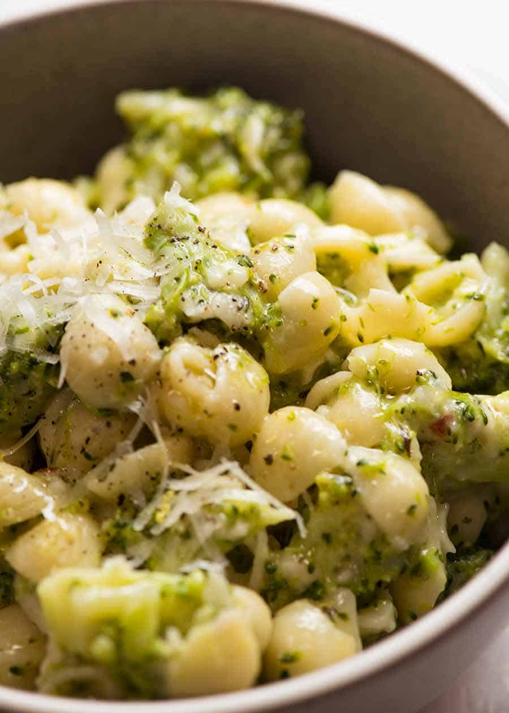

Broccoli Pasta

Description
This is one of my best emergency quick dinner ideas and
2-in-1 veg plus carb side dish. Broccoli, pasta and not
much else, it’s a little bit lemony, a little bit cheesy
and a whole lot of yum. The broccoli is cooked with the
pasta then stirred vigorously with sauce to make it
juicy and saucy
Ingredients
- 350g / 12 oz dried short pasta
- 2 broccoli heads
- 1 cup shredded cheese
- 2 tsp lemon zest
- 2 tbsp lemon juice
- 5 tbsp extra virgin olive oil
- 1/3 cup parmesan
- 2 garlic cloves
- 1 tsp mixed dried herbs
- 1/2 tsp+ red pepper flakes
- 1 tsp sugar
Steps
- Cook pasta: Boil a large pot of water with 2 tsp salt, add pasta.
- Chop broccoli: Chop broccoli into small florets.
- Cook broccoli: Add broccoli into water 1 – 2 minutes before pasta is cooked.
- Sauce ingredients in jar: Place Sauce ingredients in a jar with lid.
- Reserve pasta water: SCOOP OUT 1 cup pasta cooking water just before draining. Then drain and return pasta back into same pot on turned off stove.
- Add pasta water into Sauce: Add 1/2 cup pasta water to Pasta Sauce jar, shake well.
- Add Sauce & Cheese to pasta: Pour Sauce and add cheese into pot with pasta.
- Stir then serve! Stir vigorously, adding more pasta water if required. Add more salt and pepper if required. Serve immediately, garnished with parmesan.